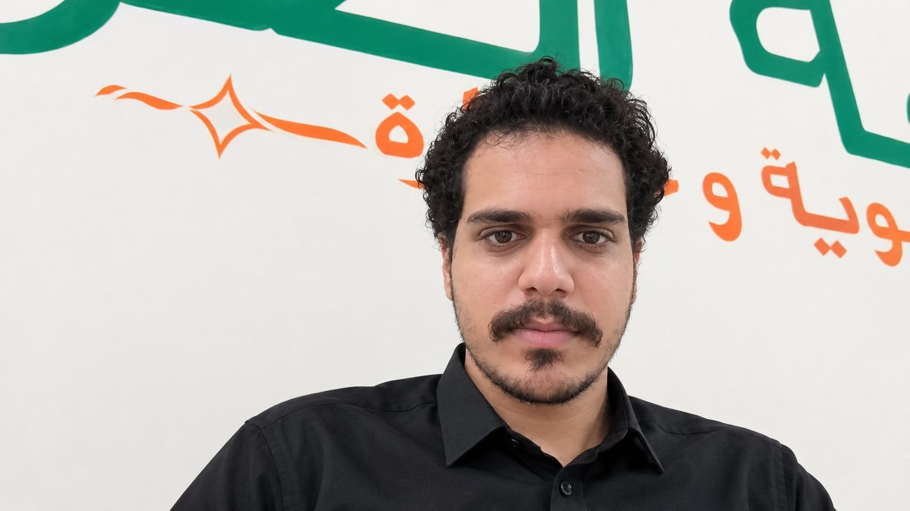

⌘
أساسيات البرمجة
تعلّم التفكير المنطقي وفهم طريقة بناء الحلول خطوةً بخطوة.
في طور التعلّم
مرحبًا، أنا سعيد محمد الهوطلي.
طالب بسيط يسعى للنجاح، وشغوف باكتشاف كيف يمكن للذكاء الاصطناعي أن يصنع فرقًا حقيقيًا.

أنا سعيد، طالب في المستوى الثالث بتخصص الذكاء الاصطناعي. أؤمن أن النجاح يبدأ بالاستمرار، وأن كل معلومة جديدة تقرّبني من الشخص الذي أطمح أن أكونه.
أتعلم اليوم أساسيات التقنية والبرمجة، وأحاول أن أطور نفسي يومًا بعد يوم. رحلتي ما زالت في بدايتها، لكن لدي فضول كبير تجاه المستقبل وإصرار على الوصول.
«النجاح ليس قفزة واحدة، بل خطوات صغيرة لا نتوقف عن أخذها.»
| المرحلة | المجال | المستوى | الحالة |
|---|---|---|---|
| التعليم الجامعي | الذكاء الاصطناعي | الثالث | مستمر |
هذه بداية رحلتي. أركز على بناء أساس قوي، وأضيف معرفة جديدة مع كل تجربة.
تعلّم التفكير المنطقي وفهم طريقة بناء الحلول خطوةً بخطوة.
استكشاف المجال الذي اخترته، وفهم كيف تتعلم الأنظمة وتساعد الناس.
الاستمرار في السؤال والبحث، وتحويل الأفكار إلى معرفة مفيدة.
أحب كل ما يفتح لي بابًا جديدًا للتفكير، ويمنحني فرصة لأتعلم شيئًا لم أكن أعرفه.
يسعدني أن أسمع منك. اكتب رسالتك وسأكون سعيدًا بالتواصل.
املأ الحقول التالية وسيفتح تطبيق البريد لديك لإرسال الرسالة.